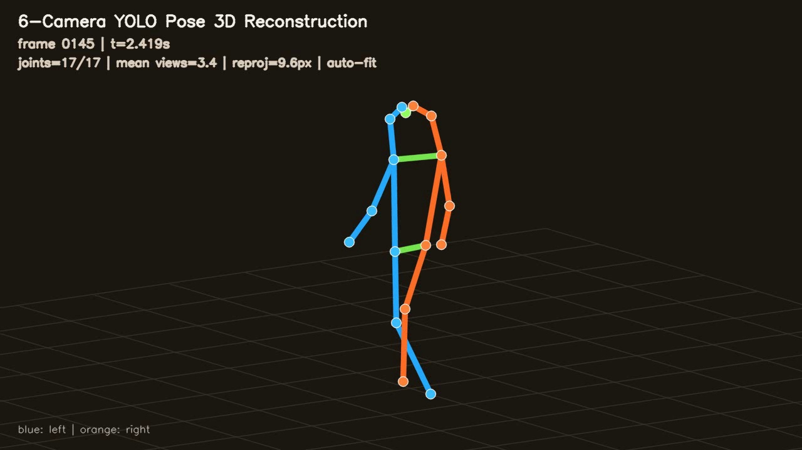
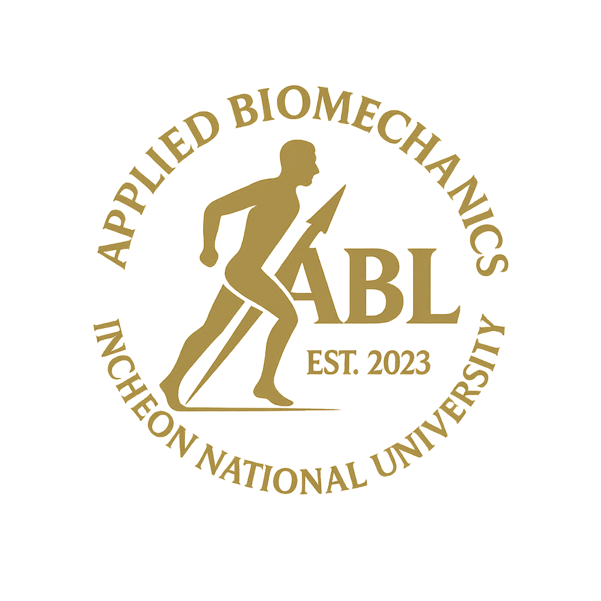

RGB 기반 하이브리드 모션캡처
Hybrid
Motion Capture
전신 Markerless 동작 추정에
해부학적 landmark 관측을 결합
일반 RGB 카메라를 활용한 전신 동작 추정과
필요 부위의 추가 관측을 통한 운동학적 분석
현재 마커를 이용한 검출·추적 및 비교 검증
향후 스티커·색 대비 부착물로 관측 대상 확장
권혁진 · Applied Biomechanics Lab
Incheon National University · 2026. 11. 02.

